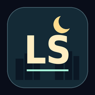

SURVIVE · BUILD · EXTRACT
LAST STANDAFTER DARK
The night, one tap away.
Save the game on this device, then add it to your home screen. The icon opens straight into the game.
SETUP & UPDATES
Ready for the next night
Checking this address…
Update still waiting in Brave?
Finish your run first. Close every Last Stand tab in Brave, including this setup page, and swipe the game away from Android’s recent apps. Then reopen its home-screen icon.
If the game still shows the older version, open your phone’s Settings → Apps → Brave → Force stop, then reopen the game icon. Force stop ends Brave’s open sessions but keeps saved records. Leave storage and app data untouched.
After offline setup, use Brave’s menu → Add to Home screen or Install app if a button is not offered.
Bring your records
In your downloaded game, open Settings → Record Backups → Save / Restore Backup and download your JSON backup. In this web game, review and restore that file if your records are missing.
Files, browsers and web addresses can have separate records. Restoring replaces records; it does not merge them. Your active run and in-run upgrades are not transferred.
How updates work
Open the normal game while connected: it checks for updates and downloads verified releases automatically. You do not need this setup page for routine updates. A downloaded update waits while any game window is open.
After finishing your run, close every game tab or app window and reopen normally to use a ready update. If this optional setup page is open, close it too. No live run is reloaded or force-activated. Runs cannot be resumed after closing the game.
Keep using the same web address and browser to retain local records. Keep an external JSON backup too.
Offline play and installation
Prepare offline play while connected. Wait for the ready message, then install or open the game. After that, test reopening the home-screen icon in airplane mode.
Installation needs a secure web address; opening a downloaded HTML file cannot install this web app. Browser installation support varies. You can still play the standalone HTML.
If the offline copy is removed, reconnect and use Prepare Offline Play again to restore the game files. Keep your JSON backup for records.
This device holds the offline game and records. Browser or operating-system cleanup can remove them. No account, automatic upload or cloud save is added.